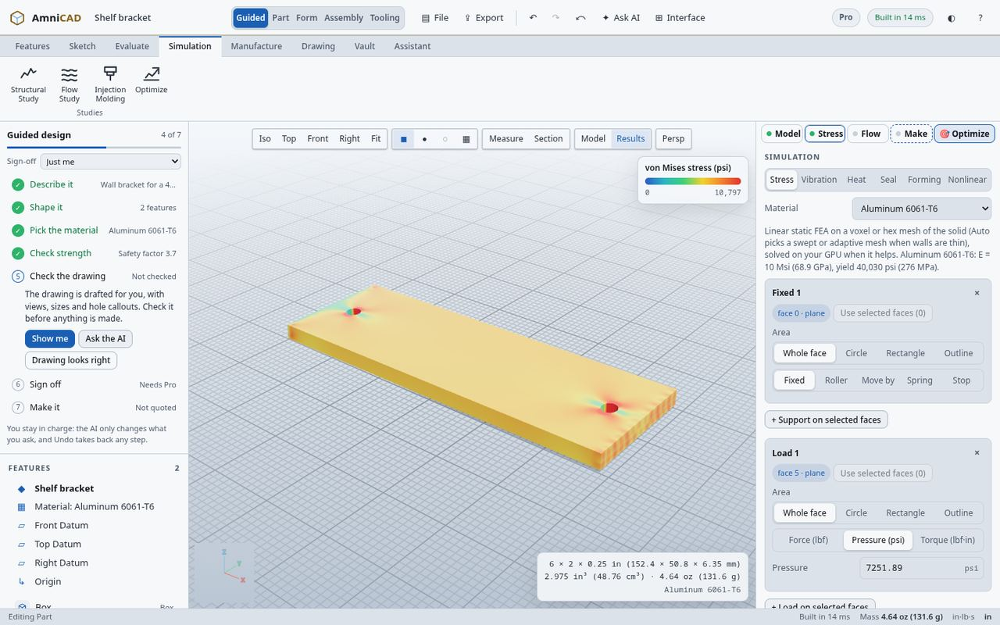
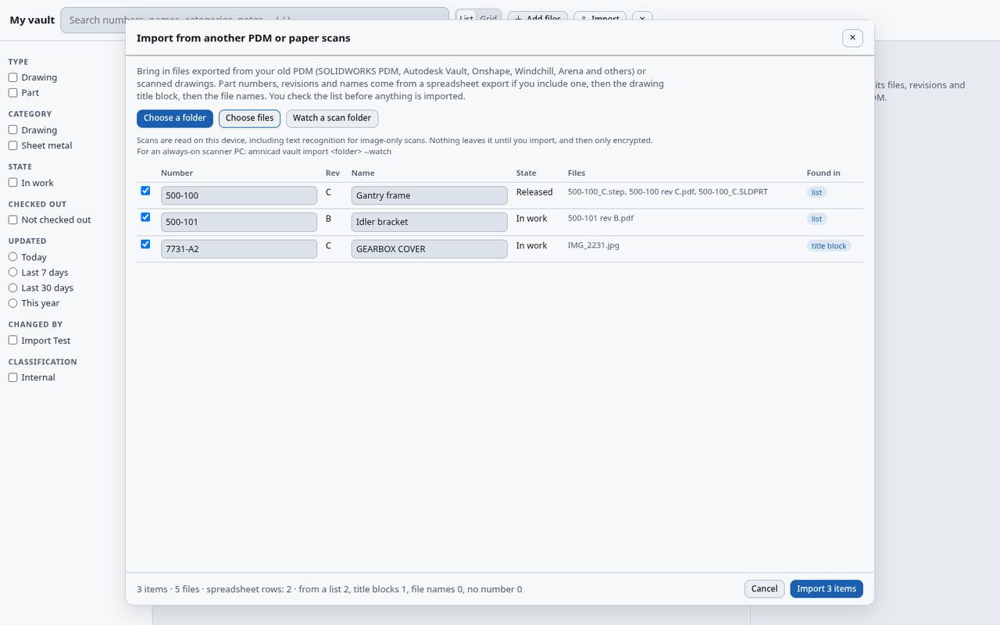
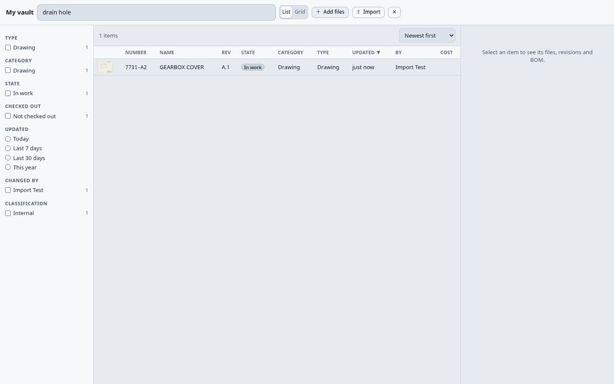
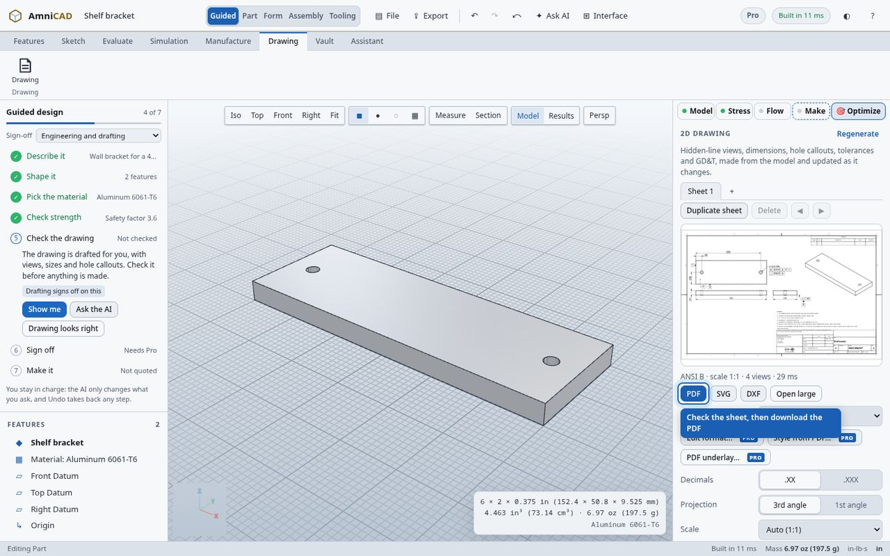
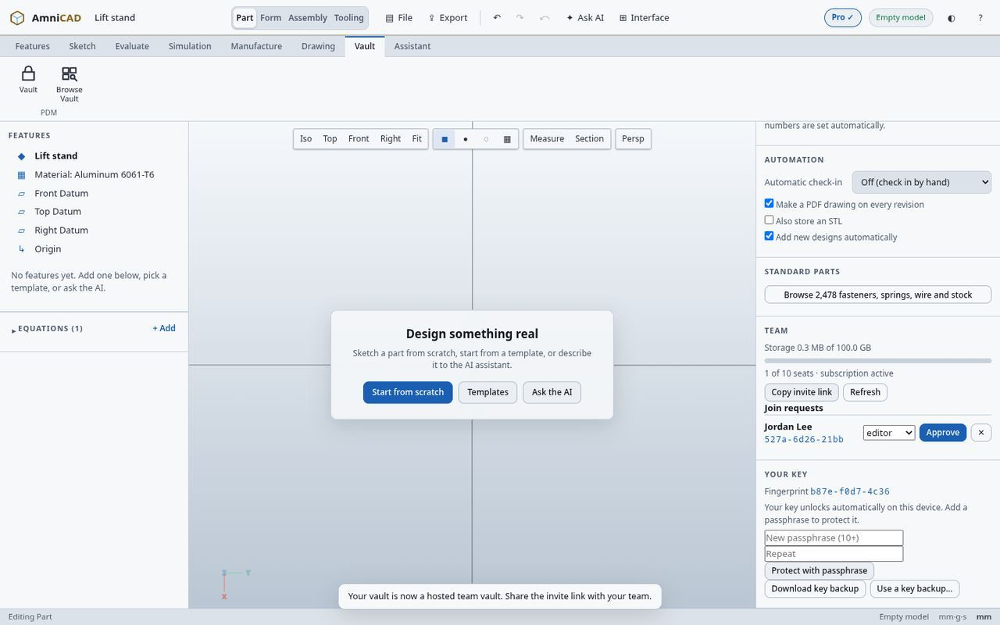

WHAT SETS IT APART

ENGINEERING-GUIDED AI DESIGN
A short checklist walks every part from description to shop: shape, material, strength, drawing, sign-off and a price. The AI can do any step, a person can do it by hand, and each step only turns green when the check is real, like a current stress result with a safety factor of 1.5 or more.

ONE-STEP IMPORT FROM YOUR OLD PDM
Drop in a folder exported from SOLIDWORKS PDM, Autodesk Vault, Onshape, Windchill or Arena. Part numbers, revisions, names and Released status come across, files are grouped by part, and you check the list before anything is imported.

PAPER DRAWINGS BECOME SEARCHABLE
Scan the drawer or snap a phone photo. The title block is read on your own computer for number, revision and title, and every word on the sheet becomes searchable. Point a scanner’s folder at the vault and new scans file themselves.

DRAWINGS DRAFTED FOR YOU
Views, dimensions, hole callouts, tolerances and the title block are drawn from the model and updated when it changes. Drafters check and adjust instead of starting from a blank sheet. Export PDF, SVG or DXF.

AI FOR THE CAD AND THE PDM
The same assistant that models parts can check them in, find old revisions and send a part for review. Release still needs your approvers, the change order is on record, and the vault stores only scrambled data we cannot read.

FULL MANUAL CAD, FEA AND CFD
Everything is still there by hand: parametric solids, sketches, assemblies, stress, vibration and heat on your GPU, a wind and water tunnel, tolerancing, instant quotes and G-code (beta). Use the guide, the AI, or neither.